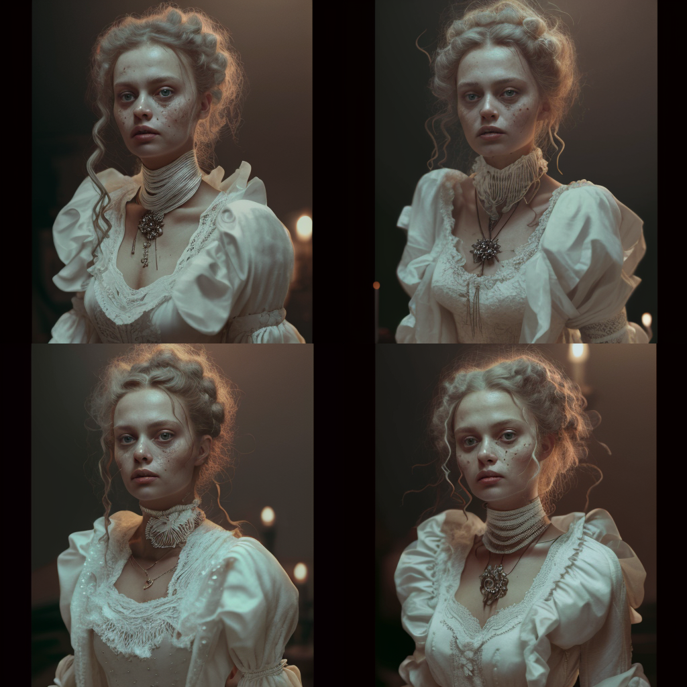
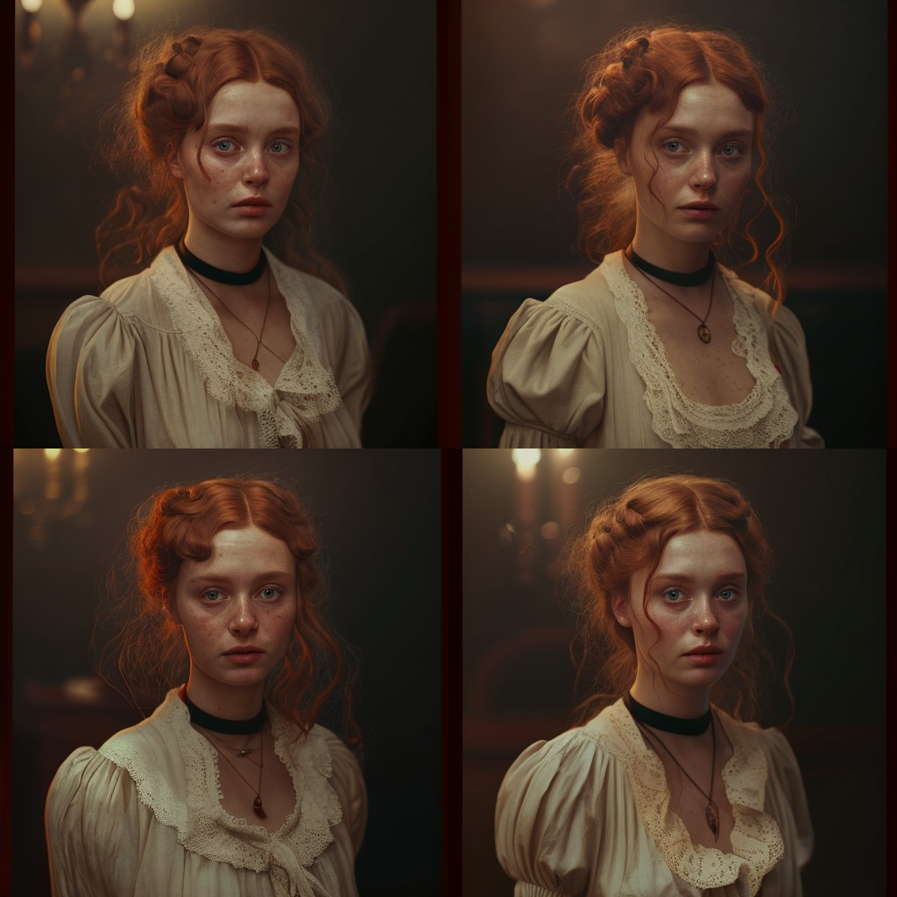
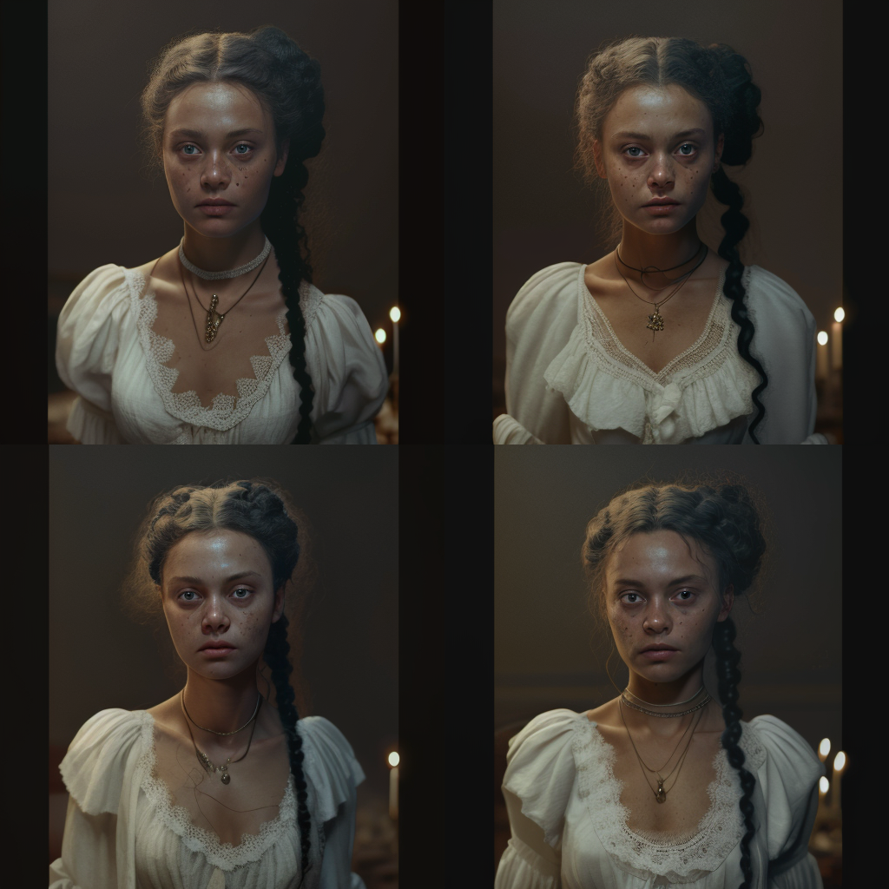
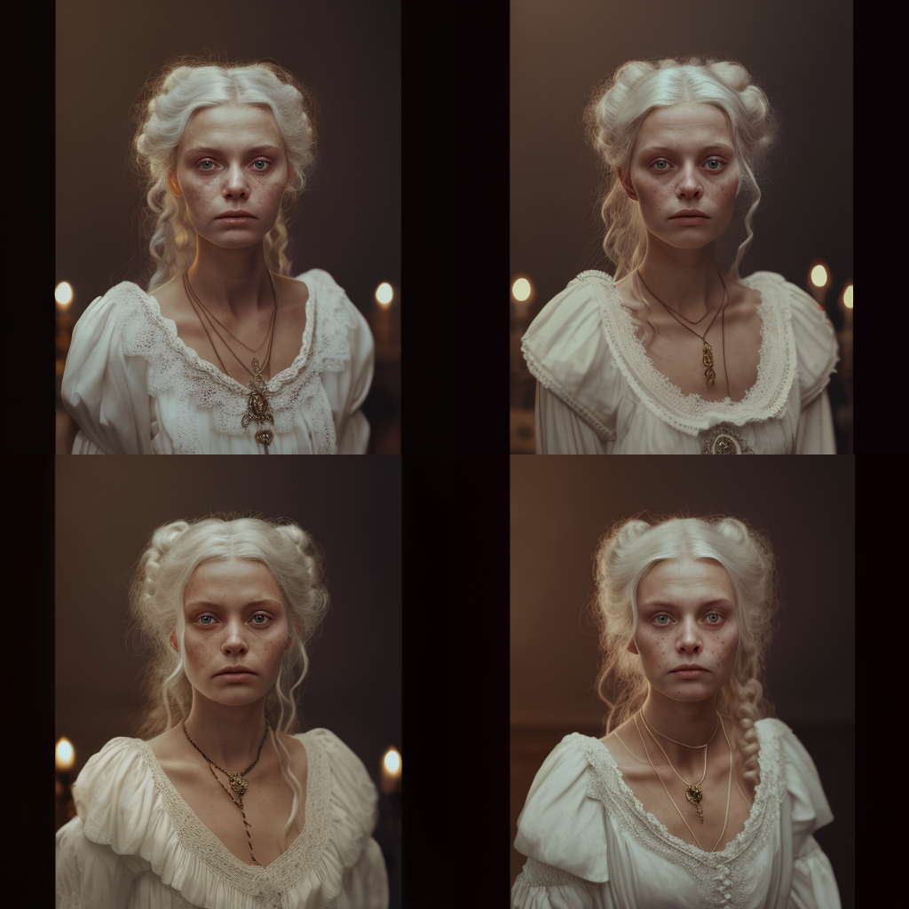

About us for creepy children.
The Weatherwax family has been baking cakes for generations, but their most famous cakes come from their Victorian bakery. It all began in the late 1800s, when the family matriarch Elizabeth Weatherwax decided to start a bakery specializing in eerie-looking cakes. She wanted to make cakes that only brave children could enjoy and challenge the palate of inquisitive adults. Elizabeth had a passion for creating unique desserts that inspired fear and intrigue in clients. Her technique in cake making was soon renowned throughout the countryside, and her reputation spread far beyond her home village. Her bakery soon became known as "The Creepy Cakery" and became a destination spot for families across England and beyond. As word spread of her delicious yet strange treats, local myths began to develop around The Creepy Cakery and eventually evolved into a tradition. It was said that if you ate one of the creepy cakes blessed by the Weatherwax family then your luck would be twice blessed - something none of Elizabeth's satisfied customers seemed to dispute! Generations later, the Weatherwax family still holds true to Elizabeth's original vision - creating creepy cakes for creepy children! They continue to delight guests with innovative bakes like "monster cupcakes" and "ghoulish gourmet cookies". The bakery remains a top spot for locals and tourists alike and continues to put smiles on curious faces with each bite.
.png)
Granny Weatherwax
Owner
Granny Weatherwax is an old woman who owns a creepy cake company. She prides herself in creating cakes with a unique and eerie twist. Her cakes are popular among children who love all things creepy, especially on Halloween. Granny Weatherwax enjoys making her cakes from scratch using all sorts of spooky and unusual ingredients. These could be anything from dried ladybugs to doll heads! Each cake is meticulously crafted and often decorated with icing that features some sort of frightening imagery. Children love Granny's cakes for more than just their creepy appearance; the taste is out of this world! The cakes have a subtle sweetness that only adds to the mystery behind them. Whether it's crawling spiders, smiling skeletons or flying ghosts, Granny ensures that each cake she makes is designed to leave a lasting impression on her customers. Granny Weatherwax's creepy cake company is an enjoyable experience for children—and adults—of all ages! Even though they look quite chilling, these cakes are guaranteed to satisfy your sweet tooth!
Rowena Wraithbourne
Menecing Bread Gluer
Rowena Wraithbourne was a master of the dark arts, a devoted practitioner of the sinister techniques of Menacing Bread Gluing. Since she was a small child, she had been entranced by the possibilities of creating mysterious, unearthly delights with her baking. And what a blessing it was for Creepy Cakes Bakery, who had the fortune of being able to employ such a talented individual! With her natural affinity for the shadowy side of desserts, Rowena was able to craft a range of dark delicacies that satisfied even the most discerning gothic sweet-toothed connoisseur.
Morgana Scrimshaw
Ghoulish Pastry Chef
Morgana Scrimshaw is a ghoulish pastry chef at Creepy Cakes Bakery, a fixture for years, renowned for her eerily delicious creations. From black cakes dripping with spiders to cupcakes decorated with eyeballs and bats, her treats are a must-have for any spooky shindig. She takes great pride in her work, using only the freshest and most delectable ingredients. Some say her cakes are sweet and savory, others find them deliciously wicked. No matter the opinion, everyone who tries them has something good to say. When not baking up creepy cakes at the bakery, Morgana spends her time concocting recipes for new ghoulish goodies. She loves experimenting with different flavors and coming up with inventive new takes on old classics - like her infamous spider cake, iced with a sinister green.
Allowing for an unearthly ambiance at any birthday party or special occasion. In the middle of this tentacle structure lies another surprise; beneath a layer of blissful moist sponge cake lies raspberry jam stuffing, ideal if your child loves sweet treats! To finsh off the design, edible stars are sprinkled around the edges of the cake and small flaming candles affixed to a few of the tentacles, ready for that grand birthday moment where it’s time to make a wish. To bring this terrifying yet delightful pastry masterpeice home? Make sure you get enough for everyone: including any unfortunate monsters attending your event!
Allowing for an unearthly ambiance at any birthday party or special occasion. In the middle of this tentacle structure lies another surprise; beneath a layer of blissful moist sponge cake lies raspberry jam stuffing, ideal if your child loves sweet treats! To finsh off the design, edible stars are sprinkled around the edges of the cake and small flaming candles affixed to a few of the tentacles, ready for that grand birthday moment where it’s time to make a wish. To bring this terrifying yet delightful pastry masterpeice home? Make sure you get enough for everyone: including any unfortunate monsters attending your event!
Allowing for an unearthly ambiance at any birthday party or special occasion. In the middle of this tentacle structure lies another surprise; beneath a layer of blissful moist sponge cake lies raspberry jam stuffing, ideal if your child loves sweet treats! To finsh off the design, edible stars are sprinkled around the edges of the cake and small flaming candles affixed to a few of the tentacles, ready for that grand birthday moment where it’s time to make a wish. To bring this terrifying yet delightful pastry masterpeice home? Make sure you get enough for everyone: including any unfortunate monsters attending your event!